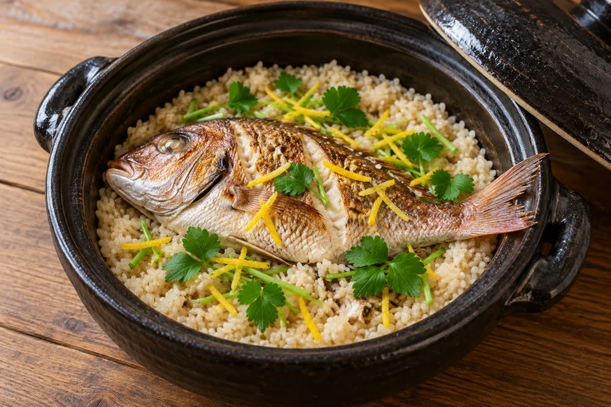
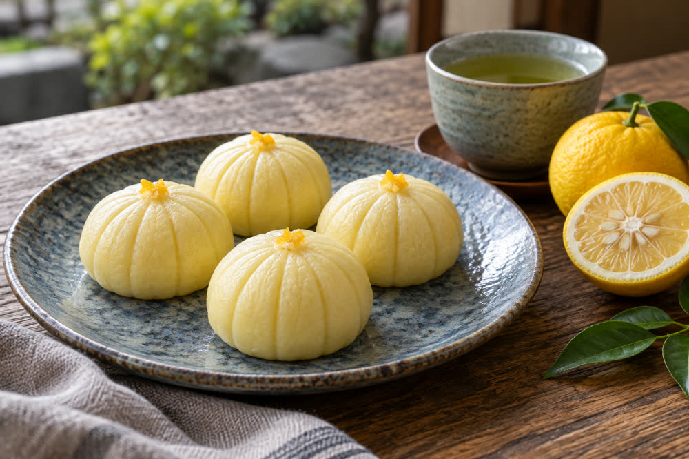

Cuisine of Springvale
| Cuisine of Springvale 春川の郷土料理 | |
|---|---|
 Tai-yuzu meshi cooked in a clay pot | |
| Region | Springvale, Harvest Prefecture |
| Key ingredients | Sea bream, oysters, ayu, Spanish mackerel, yuzu, buckwheat, white miso |
| Signature dish | Tai-yuzu meshi |
| Festival sweet | Tōrō manjū (since 1911) |
| Sea bream spending | ¥4,812 per household (2024), highest of all prefectural capitals |

The cuisine of Springvale (春川の郷土料理, Harukawa no kyōdo ryōri) is the regional cooking of Springvale and the surrounding parts of Harvest Prefecture, Japan. It draws on three sources close to the city: fish and shellfish from Harvest Bay, freshwater fish from the Mirror River, and the buckwheat, vegetables and citrus of the hills around Mount Moonview. Its most distinctive ingredient is yuzu, grown in the prefecture on a large scale since 1688, whose peel or juice finishes almost every local dish. The best-known dishes are tai-yuzu meshi, sea bream rice with yuzu, and the lantern-shaped buns called tōrō manjū.[1]
Overview[edit]
Springvale grew up as the castle town of the Asagiri clan from 1603, with its fishing port at Uomachi near the river mouth and its merchant quarter in Gofukumachi. The domain's kitchen records, kept at the castle from the late 17th century, already mention sea bream cooked with yuzu, Spanish mackerel pressed with kelp, and ayu from the upper river.[2] The order of the 4th lord Asagiri Tadanobu in 1688 that every farming household plant three yuzu trees made the fruit cheap and abundant, and it took the place that sudachi or kabosu hold in other regions; see Yuzu cultivation in Harvest.
Local cooking favors light, clear seasoning: kelp stock, white miso rather than red, and little sugar. Dishes are traditionally served in Springvale ware, and a clay pot from the Suyama kilns is the usual vessel for sea bream rice. Most local dishes are seasonal, following the sea bream in spring, ayu in summer and autumn, and oysters in winter.
Dishes[edit]
| Dish | Japanese | Main ingredients | Season | Notes |
|---|---|---|---|---|
| Tai-yuzu meshi | 鯛柚子めし | Sea bream, rice, kelp stock, yuzu peel | March–May | Signature dish; cooked in a clay pot |
| Kagami-jiru | 鏡汁 | Grilled ayu, clear stock, yuzu peel | June–October | Named for its mirror-clear broth |
| Harvest kaki-nabe | みのり牡蠣鍋 | Oysters, white miso, tofu, vegetables, yuzu | November–March | Harvest Bay oysters |
| Tōrō manjū | 灯籠饅頭 | Wheat dough, white bean paste, yuzu | All year | Created 1911 by Kikuya; festival sweet |
| Sagimai-zushi | 鷺舞寿司 | Spanish mackerel (sawara), vinegared rice, kelp, yuzu | Spring | Pressed sushi |
| Onsen yu-soba | 湯そば | Moonview buckwheat, hot-spring water | All year (new buckwheat in November) | Speciality of Moonview Spa |
| Yuzu-miso oden | 柚子味噌おでん | Daikon, konnyaku, fish cakes, yuzu miso | Winter | Street stalls in Uomachi |
Main dishes[edit]
Tai-yuzu meshi[edit]
Tai-yuzu meshi (鯛柚子めし) is the signature dish of Springvale. A whole sea bream (madai) from Harvest Bay is salted, briefly grilled and laid on rice in a clay pot with kelp stock, light soy sauce and sake; when the rice is cooked, shredded yuzu peel is added and the fish is boned and flaked into the rice at the table. It is best from March to May, when the spawning "cherry sea bream" (sakura-dai) are fattest. Both wild and farmed bream are used; the bay has had sea bream farms since the 1960s.[1] Restaurants around Uomachi serve it in pots for two to four people, and a boxed version is sold at Springvale Central Station.
Kagami-jiru[edit]
Kagami-jiru (鏡汁, "mirror soup") is a clear soup of ayu (sweetfish) from the Mirror River. The fish are salt-grilled over charcoal and then simmered for a few minutes in a light stock, which takes on their smoky flavor while staying clear; a strip of yuzu peel is added before serving. The name refers both to the river and to the mirror-clear broth. It is made during the ayu fishing season, 1 June to 31 October, and is served at riverside restaurants in the town of Mirror, especially around Futamata.[2]
Harvest kaki-nabe[edit]

Harvest kaki-nabe (みのり牡蠣鍋) is a hot pot of oysters from Harvest Bay, where oyster farming began in 1878 and about 1,920 rafts are now moored. The oysters are simmered with tofu, Chinese cabbage, leeks and chrysanthemum greens in kelp stock thickened with sweet white miso, and yuzu juice and zest are added at the end. The dish is eaten from November to March, when the oysters are in season; oyster huts on the Uchiura shore serve it alongside grilled oysters.[3]
Tōrō manjū[edit]


Tōrō manjū (灯籠饅頭, "lantern buns") are steamed buns shaped like the paper lanterns of the Springvale Lantern Festival, with ribs pressed into the dough and a filling of white bean paste flavored with yuzu. They were created in 1911 by the confectioner Kikuya (菊屋) of Gofukumachi for that year's festival. Kikuya and about a dozen other shops sell them all year, but most are sold on the festival weekend in October, when Kikuya alone sells around 40,000.[4]
Sagimai-zushi[edit]
Sagimai-zushi (鷺舞寿司) is a pressed sushi of Spanish mackerel (sawara). Fillets are salted and cured in vinegar, laid on vinegared rice in a wooden mold, covered with a sheet of white kelp and thin slices of yuzu, and pressed for several hours before being cut. The white kelp over the pale fish is said to look like a heron's wing, and the name comes from Sagimai Hill, the site of Springvale Castle. It is a spring dish, eaten at cherry-blossom parties in Castle Park and at the Doll Festival.[citation needed]
Onsen yu-soba[edit]
Onsen yu-soba (湯そば) is the speciality of Moonview Spa. The noodles are made from buckwheat grown in the Moonview highlands and, after boiling, are rinsed in hot-spring water from the town's sodium chloride–hydrogen carbonate springs, which local cooks say gives them a smooth, slippery surface.[a] They are served cold with a dipping sauce or hot in broth, often with yuzu. About ten shops in Moonview Spa serve them, and new-crop buckwheat arrives in November.[5]
Yuzu-miso oden[edit]
Yuzu-miso oden (柚子味噌おでん) is a winter oden of daikon, konnyaku, eggs and fish cakes from the Uomachi market, simmered in a light stock and served with a thick, sweet yuzu miso instead of mustard. It is sold from November to February at street stalls (yatai) along the harbor road in Uomachi, where nine licensed stalls operated in 2025.[6]
Yuzu products[edit]
About 78 % of the prefecture's yuzu crop is processed rather than sold fresh. The main local products are yuzu kosho, a paste of green yuzu peel, chili and salt made from the August–September harvest; yuzu ponzu, a citrus soy sauce; yuzu-shu, a liqueur made by the sake brewers of the upper valley; and yuzu marmalade. Candied peel and yuzu juice are also used by Springvale confectioners, including in tōrō manjū. "Moonview yuzu" from the town of Moonview has been a registered Geographical Indication since 2019.[7]
Consumption[edit]
Springvale households spent ¥4,812 a year on sea bream in the 2024 national household survey, the highest of all prefectural capitals and about four times the national average.[8] The city also ranks high for spending on oysters and on fresh citrus other than mandarins.[citation needed]
See also[edit]
- Yuzu cultivation in Harvest
- Springvale Lantern Festival
- Harvest Bay
- Mirror River
- Moonview Spa
- Economy of Springvale
Notes[edit]
- ^ Most soba shops in other regions rinse boiled noodles in cold water to firm them. The yu-soba shops cool the spring water in tanks before rinsing, so the noodles are not cooked further.
References[edit]
- ^ a b Nakai, Sachiko (2016). The Tables of Harvest: A History of Regional Cooking. Sagimai Shobō, pp. 9–21.
- ^ a b Springvale City History Compilation Committee (1989). Springvale City History, vol. 5: Folk Culture. Springvale City, pp. 233–268.
- ^ Harvest Prefecture Fisheries Division (2024). Fisheries of Harvest Prefecture 2024. Harvest Prefecture, pp. 14–19.
- ^ "Kikuya marks a century of lantern buns". The Springvale Herald, 8 October 2011, p. 5.
- ^ Moonview Town Tourism Association (2023). Moonview Spa Guide. Moonview Town, p. 22.
- ^ "Uomachi's oden stalls light up for winter". Springvale Herald, 18 November 2025, p. 21.
- ^ Harvest Prefecture Agriculture Division (2024). Yuzu in Harvest: Production and Processing. Harvest Prefecture, pp. 6–11.
- ^ Statistics Bureau of Japan (2025). Family Income and Expenditure Survey 2024, table 1-2 (prefectural capitals). Ministry of Internal Affairs and Communications, p. 88.